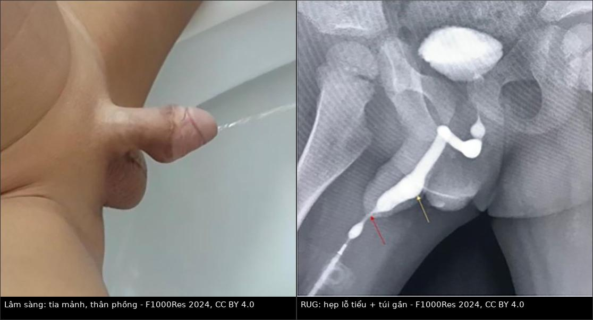
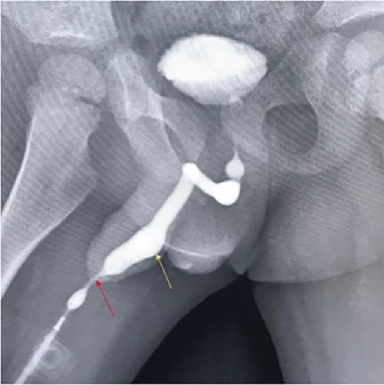
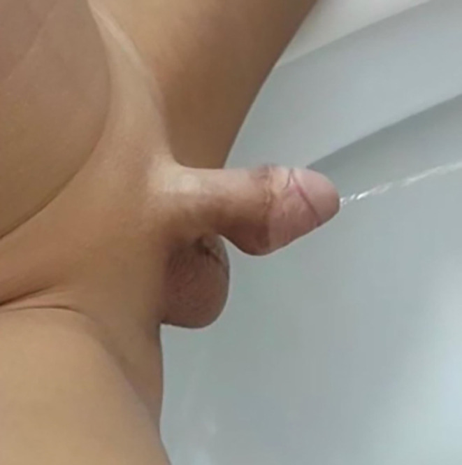
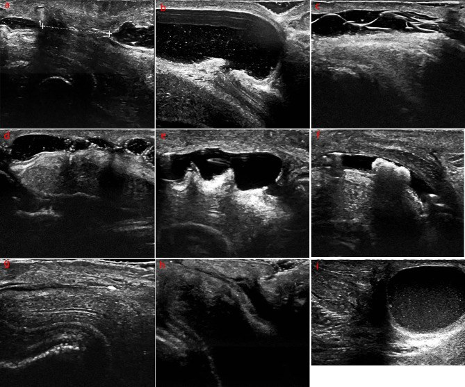

1702 — Túi niệu đạo sau tạo hình niệu đạo ở trẻ / Urethral diverticulum after hypospadias repair
Tags: pattern:tui-nieu-dao pattern:hep-nieu-dao pattern:tia-tieu-manh pattern:u-dich-sau-tieu vung:duong-vat vung:khung-chau protocol:RUG protocol:VCUG protocol:sieu-am-tan-so-cao protocol:noi-soi-nieu-dao incidentaloma:khong
Mức chắc chắn (certainty): tổng hợp y văn (literature synthesis) — ghép 2 ca nguyên văn có ảnh (bé trai 2 tuổi sau TIP, PMC11231625; nam 45 tuổi sau mổ 2 thì, PMC10715992 làm mốc dài hạn), 1 loạt 159 trẻ có phân tích đa biến (PMC12124023) và 1 loạt 121 trẻ siêu âm tần số cao (PMC11165801). Mọi con số dưới đây lấy từ các bài ghi trong sources.md; chỗ nào nguồn không nói rõ thì ghi "chưa rõ".
1. Tổng quan bệnh học – cơ chế hình ảnh
Túi niệu đạo (urethral diverticulum, UD) là gì? Một khoang lót niêm mạc niệu đạo lồi ra ngoài lòng niệu đạo thật, thông với lòng niệu đạo bằng một cổ. Sau tạo hình niệu đạo (urethroplasty) vì lỗ tiểu lệch thấp (hypospadias — dị tật sinh dục nam hay gặp nhất, tần suất tăng liên tục 1980–2010), đây là biến chứng hiếm nhưng để lại di chứng cơ năng nặng: ứ nước tiểu, nhiễm trùng, sỏi, rỉ tiểu sau khi tiểu.
Vì sao túi hình thành — chuỗi ba bước:
- Tắc nghẽn hạ lưu tương đối (distal obstruction). Lỗ tiểu hẹp (meatal stenosis) hoặc hẹp ngay sau mào quy đầu làm áp lực đẩy nước tiểu tăng; đoạn niệu đạo tái tạo thành mỏng, ít mô đệm đỡ (unsupported) là nơi giãn trước tiên. Trong loạt 159 trẻ, 4/14 (28,57%) ca UD có hẹp lỗ tiểu/ven mào quy đầu, và túi xuất hiện khoảng 1 tháng sau khi phát hiện tia tiểu mảnh, tiểu khó (PMC12124023). Hẹp là yếu tố độc lập với OR = 10,010 (95% CI 1,554–64,470).
- Niệu đạo tái tạo quá rộng hoặc vỏ bọc kém. Mảnh ghép/vạt thiếu máu nuôi, hoặc mô ghép bị "căng" quanh niệu đạo mới → chỗ yếu phình ra khi có áp lực. Ghép vạt MOIF (modified onlay island flap) có OR = 10,670 (1,913–59,505); riêng TPIF chỉ 1,96% (PMC12124023).
- Chênh lệch giữa dung tích và đường thoát. Khi cổ túi hẹp hơn thân túi, nước tiểu vào dễ, ra khó → túi to dần theo thời gian, không tự khỏi.
Vì sao tín hiệu/hình ảnh lại như vậy (giải thích TẠI SAO):
- Niệu đạo niệu đồ ngược dòng (retrograde urethrogram, RUG) và VCUG: cản quang iod (đậm độ > 1.000 HU trên CT, cản quang mạnh trên X-quang) điền đầy lòng niệu đạo → chỗ giãn khu trú hiện thành bóng cản quang hình túi/bầu gắn vào trục niệu đạo qua cổ hẹp. Vì chất lỏng chảy theo đường trở lực thấp nhất, khi bơm ngược dòng túi sẽ đầy trước khi qua được chỗ hẹp phía dưới — nên phải chụp thì đang bơm/đang đi tiểu (voiding), không chỉ một phim sớm.
- Siêu âm tần số cao (15 MHz): nước tiểu là dịch thuần, không echo → túi là khoang trống âm (anechoic), bờ đều, nối với lòng niệu đạo bằng cổ; bơm nước muối sinh lý vào niệu đạo (sonourethrography) làm khoang căng rõ và cho đo đường kính chính xác bằng mm. Sỏi trong túi: echo dày + bóng cản âm phía sau (posterior acoustic shadowing) do canxi hấp thu sóng âm mạnh; lông niệu đạo (biến chứng của vạt da có nang lông): cấu trúc đường thẳng echo dày — dễ nhầm với vật lạ.
- Cộng hưởng từ (MRI): nước tiểu T2 rất sáng, túi thành mỏng; nhưng không cần thiết cho chẩn đoán thường quy và ở trẻ cần an thần — chỉ dùng khi cần đánh giá mô mềm phức tạp (rò, ổ áp-xe, dị tật phối hợp).
- Xơ/hẹp: collagen cũ → T2 tối, đậm độ mô mềm trên CT, echo dày trên siêu âm; đoạn hẹp thường ngắn, khu trú ngay sau lỗ tiểu.
Ngưỡng định lượng cần nhớ:
| Chỉ số | Số liệu | Nguồn |
|---|---|---|
| Biến chứng chung sau mổ hypospadias | 8–56% | PMC12124023 |
| Tần suất UD sau tạo hình niệu đạo có cắt dải niệu đạo (DUP) | y văn 1,5–14%; loạt 159 trẻ: 8,64% (14/159) | PMC12124023 |
| Thời điểm xuất hiện túi sau mổ cuối | 1–22 tháng, trung bình 8,50 ± 6,61 tháng | PMC12124023 |
| Tuổi mổ lần đầu | 6–83 tháng, trung bình 24,13 ± 16,30 tháng (n = 159) | PMC12124023 |
| Yếu tố độc lập của UD | bề ngang quy đầu OR 0,444 (0,220–0,895)/mm · BMI OR 1,808 (1,318–2,481) · MOIF OR 10,670 (1,913–59,505) · hẹp niệu đạo OR 10,010 (1,554–64,470) | PMC12124023 |
| Triệu chứng khi có túi | phồng mặt bụng dương vật khi tiểu 100% (14/14) · tia chẻ như vòi sen 64,29% · tia lệch 28,57% · tiểu khó/tia mảnh 28,57% · viêm đường tiểu 14,29% · sỏi niệu đạo 7,14% | PMC12124023 |
| Số mổ phải chịu (tính đến khi phát hiện UD) | 1–4 lần, trung bình 2,43 ± 0,94 | PMC12124023 |
| Siêu âm 15 MHz sau mổ hypospadias (n = 121) | hẹp niệu đạo 26 (21,5%) · ứ nước tiểu trong niệu đạo 12 (9,9%) · vách trong lòng 17 (14,0%) · lông niệu đạo 6 (5,0%) · túi niệu đạo 2 (1,65%) · giãn khu trú 2 (1,65%) · sỏi 1 · canxi hóa 1 | PMC11165801 |
| Diễn tiến rất muộn | nam 45 tuổi, mổ 2 thì lúc 3 tuổi, nhập viện vì tắc nghẽn 42 năm sau — sỏi trong túi + hẹp | PMC10715992 |
2. Mẫu hình + chẩn đoán phân biệt theo vị trí (gamut)
Mẫu hình chung: bé trai đã mổ hypospadias, tiểu tia mảnh, thân dương vật phồng lên khi đang tiểu rồi xẹp đi, kèm rỉ nước tiểu sau khi tiểu (post-void dribbling) và đôi khi phải bóp nặn cho hết nước.
Ba câu hỏi phải trả lời trước khi đặt tên:
- Túi ở tầng nào? (lỗ tiểu → hố thuyền (fossa navicularis) → niệu đạo dương vật → niệu đạo hành)
- Có tắc phía dưới túi không? (không trả lời câu này thì mổ cắt túi sẽ tái phát)
- Có sỏi/lông/túi thừa thứ hai không? (quyết định có phải mở niệu đạo rộng hơn)
Gamut theo vị trí:
- Lỗ tiểu (meatus) – ven mào quy đầu: hẹp lỗ tiểu đơn thuần (không có túi), sẹo xơ sau cắt bao quy đầu ở trẻ hypospadias.
- Hố thuyền (fossa navicularis): túi nhỏ ngay sau lỗ tiểu (thường do hẹp lỗ tiểu), giãn khu trú thoáng qua; vách niệu đạo bẩm sinh.
- Niệu đạo dương vật (thân): túi niệu đạo sau tạo hình (vị trí hay gặp nhất, đúng nơi đặt mảnh ghép), rò niệu đạo–da (lỗ rò ở mặt bụng, nước tiểu phụt ra ngoài chứ không phồng), hẹp niệu đạo dài.
- Niệu đạo hành – hành xương mu: túi lớn + sỏi (ứ đọng lâu), van niệu đạo trước (anterior urethral valve — giãn niệu đạo phía trên van, kèm bàng quang căng, trào ngược), túi niệu đạo bẩm sinh ở trẻ chưa mổ.
- Ngoài niệu đạo (dễ nhầm trên lâm sàng): ứ nước tiểu trong niệu đạo (pseudo-diverticulum — thấy trên siêu âm 9,9% loạt 121), dị tật niệu đạo đôi (urethral duplication), nang ống niệu rốn tồn tại (patent urachus), túi thừa bàng quang (bladder diverticulum — vị trí trong khung chậu, không ở dương vật).
3. Bảng so sánh phân biệt (ma trận đối chiếu)
| Thực thể (entity) | Hình ảnh điển hình | Chốt vào (rule-in) | Chốt loại (rule-out) | Gợi ý xác nhận |
|---|---|---|---|---|
| Túi niệu đạo sau tạo hình | RUG/VCUG thì voiding: bóng hình túi/bầu gắn vào trục niệu đạo bằng cổ hẹp, thường có đoạn hẹp ngay dưới; siêu âm 15 MHz: khoang trống âm nối lòng niệu đạo | Phồng mặt bụng dương vật khi tiểu + rỉ tiểu sau tiểu + tiền sử mổ hypospadias | Không có cổ thông với lòng niệu đạo (giãn khu trú lan tỏa) | RUG thì voiding + nội soi niệu đạo (thấy cổ túi) |
| Hẹp lỗ tiểu/niệu đạo (meatal stenosis, stricture) | Tia cản quang mảnh như sợi chỉ, niệu đạo giãn nhẹ phía trên nhưng không có cổ túi; không phồng khi tiểu | Tia mảnh + khó tiểu + đặt nong có trở lực | Túi có cổ + phồng khi tiểu | Hiệu chuẩn (calibration) bằng nong, nội soi |
| Rò niệu đạo–da (urethrocutaneous fistula) | Cản quang thoát ra mặt da qua lỗ rò; không có khoang kín | Nước tiểu phụt ra ngoài khi tiểu, ướt quần lót, thấy lỗ rò trên da | Túi kín (cản quang đọng trong khoang, không ra da) | RUG + test xanh methylene, nội soi |
| Sỏi niệu đạo | Cản quang: khuyết cản quang (filling defect) trong túi hoặc lòng niệu đạo; siêu âm: echo dày + bóng cản âm sau | Đau, bí tiểu cấp, sờ thấy cục cứng dọc niệu đạo | Dịch thuần (không có echo/bóng cản âm) | Siêu âm, nội soi, X-quang không chuẩn bị |
| Lông niệu đạo/bezoar (hair in neourethra) | Siêu âm: đường thẳng echo dày trong lòng; nội soi: búi lông | Tiền sử vạt da có nang lông (TPIF/MOIF) + nhiễm trùng tái diễn | Tổn thương có bóng cản âm (sỏi) | Nội soi niệu đạo |
| Vách/gờ niệu đạo (intraurethral septum/fold) | Siêu âm: dải echo dày vắt ngang lòng, không phải khoang | Hẹp dòng chảy tại chỗ, không ứ đọng | Không có khoang kín | Nội soi |
| Van niệu đạo trước (anterior urethral valve) | VCUG: niệu đạo giãn rộng phía trên van, van hình nắp/nêm; bàng quang căng, có thể trào ngược | Trẻ nhỏ, bí tiểu, nhiễm trùng, suy thận (không có tiền sử mổ) | Tiền sử mổ hypospadias + cổ túi rõ | VCUG thì voiding, nội soi |
| Túi niệu đạo bẩm sinh (congenital) | Túi lớn, thành mỏng, thường kèm hẹp/van; phát hiện ở trẻ chưa mổ | Chưa có phẫu thuật niệu đạo | Đã mổ tạo hình tại đúng vị trí túi | VCUG, nội soi |

Trái: đang đi tiểu — tia nước rất mảnh trong khi thân dương vật căng phồng (túi đầy). Phải: RUG — hẹp lỗ tiểu (mũi tên đỏ) và túi niệu đạo gần (mũi tên vàng) đổ đầy cản quang. Nguồn: F1000Research 2024;13:222 (PMC11231625), CC BY 4.0. Ảnh ghép letterbox, giữ nguyên tỷ lệ.Ba dấu hiệu quyết định trên ảnh
- Dấu "bóng bay" (ballooning) khi voiding: túi chỉ đầy ở thì đi tiểu, xẹp ở thì nghỉ — nếu chỉ chụp phim sớm lúc bơm, túi có thể chưa đầy và bị bỏ sót.
- Cổ túi (neck) hẹp hơn thân túi: đây là dấu phân biệt với giãn khu trú (chỉ là niệu đạo rộng ra, không có cổ); nội soi xác nhận.
- Đoạn hẹp ngay dưới túi: bắt buộc phải tìm — quyết định có mở rộng lỗ tiểu/meatoplasty cùng lúc hay không (nếu không, túi tái phát).
4. Protocol chụp + hệ phân độ/điểm chuẩn hóa
4.1 Protocol hình ảnh
- Bước 1 — Siêu âm tần số cao (15 MHz, đầu dò thẳng) ± bơm nước muối sinh lý vào niệu đạo (sonourethrography): đo đường kính túi (mm), chiều dài, độ dày thành, tìm sỏi (echo + bóng cản âm) và ứ nước tiểu sau tiểu (thể tích tồn dư). Đây là bước không bức xạ, làm lại được nhiều lần — ưu tiên ở trẻ (ALARA).
- Bước 2 — Niệu đạo niệu đồ ngược dòng (RUG) ± VCUG: bơm cản quang qua lỗ tiểu (RUG) để điền đầy toàn bộ niệu đạo trước; nếu nghi tổn thương niệu đạo sau/bàng quang thì làm VCUG thì voiding. Bắt buộc ≥ 2 phim: lúc đang bơm và lúc đi tiểu/rặn — đây là điểm quyết định.
- Bước 3 — Nội soi niệu đạo (urethroscopy) ± calibration bằng nong: xác nhận cổ túi, đoạn hẹp phía dưới, sỏi/lông, và loại trừ rò.
- Bước 4 — Chỉ định mổ: túi lớn + tiểu khó/tái phát nhiễm trùng/sỏi → cắt túi + tạo hình niệu đạo + meatoplasty; túi nhỏ, không triệu chứng → theo dõi (trong loạt 14 ca: 9 ca được can thiệp/mổ, 4 ca theo dõi tiếp — PMC12124023).
- Không dùng CT thường quy: liều tuyến sinh dục ở trẻ; chỉ CT khi cần xương/ổ phức tạp.
4.2 Hệ phân độ/điểm chuẩn hóa
Hiện chưa có hệ phân độ (grading) được kiểm chứng riêng cho túi niệu đạo sau tạo hình — các bài trong sources.md phân tầng theo kích thước + triệu chứng + có tắc nghẽn dưới, không theo điểm số. Ghi rõ như vậy thay vì bịa một "RADS". Khung phân tầng thực hành (dựa trên tiêu chí mổ của loạt 159 trẻ):
| Tầng | Tiêu chí | Hướng xử trí |
|---|---|---|
| Nhỏ, không triệu chứng | Chỉ thấy trên siêu âm, không phồng khi tiểu, không rỉ tiểu | Theo dõi + hiệu chuẩn định kỳ |
| Có triệu chứng, không tắc nghẽn | Phồng khi tiểu, tia chẻ/lệch, rỉ sau tiểu | Cân nhắc cắt túi + tạo hình khi túi lớn |
| Có tắc nghẽn dưới | Hẹp lỗ tiểu/ven mào quy đầu (28,57% ca UD) | Mở rộng lỗ tiểu/meatoplasty + xử trí túi |
| Biến chứng | Sỏi (7,14%), nhiễm trùng tái diễn (14,29%) | Mổ: lấy sỏi + cắt túi/tạo hình |
flowchart TD
A[Bé trai đã mổ hypospadias: tiểu tia mảnh, thân dương vật phồng khi tiểu, rỉ tiểu sau tiểu] --> B[Siêu âm 15 MHz ± bơm nước muối: đo túi, tìm sỏi]
B --> C{Thấy khoang trống âm có cổ?}
C -->|Không| D[Hiệu chuẩn + RUG: tìm hẹp/rò/vách]
C -->|Có| E[RUG + VCUG thì voiding: toàn bộ niệu đạo trước]
E --> F{Có đoạn hẹp dưới túi?}
F -->|Có| G[Meatoplasty/mở rộng + xử trí túi]
F -->|Không| H{Túi lớn hoặc có triệu chứng/sỏi/UTI?}
H -->|Có| I[Cắt túi + tạo hình niệu đạo]
H -->|Không| J[Theo dõi + hiệu chuẩn định kỳ]
I --> K[Nội soi kiểm tra: cổ túi, sỏi, lông]
G --> K
5. Biến thể bình thường và cạm bẫy
Biến thể "bình thường" dễ nhầm:
- Ứ nước tiểu trong niệu đạo sau tiểu (intraurethral urine accumulation): gặp 12/121 (9,9%) trẻ sau mổ — trên siêu âm là khoang trống âm dọc lòng niệu đạo, không có cổ, tự xẹp khi rặn tiểu lần hai. Đừng gọi là túi.
- Giãn khu trú nhẹ (local urethral dilation) 2/121: niệu đạo rộng ra không có cổ, thường do đoạn hẹp phía dưới; xử trí hẹp là đủ.
- Vách/gờ trong lòng (17/121 và 2/121): dải niêm mạc vắt ngang, không phải khoang.
- Bóng catheter: bóng của ống thông niệu đạo khi bơm cản quang tạo khuyết cản quang tròn nhẵn — không phải sỏi; rút bóng rồi chụp lại.
Cạm bẫy (pitfall):
- Chỉ chụp một phim RUG lúc bơm: túi chưa đầy → âm tính giả; phải có phim đang đi tiểu.
- "Satisfaction of search": đã thấy hẹp lỗ tiểu là dừng, không nhìn tiếp lên trên tìm túi — trong loạt 159 trẻ, 1/3 ca UD đi kèm hẹp, nên thấy hẹp phải chủ động tìm túi.
- Bỏ sót sỏi trong túi: 7,14% ca UD có sỏi; siêu âm thấy echo + bóng cản âm — đừng chỉ đo kích thước túi.
- Nhầm lông niệu đạo với sỏi: lông là đường thẳng echo dày, không có bóng cản âm; sỏi có bóng. Điều trị khác nhau (sỏi: lấy sỏi; lông: cắt búi lông + có thể phải thay vạt).
- Đặt ống thông "chữa khỏi": ống thông làm xẹp túi tạm thời, triệu chứng giảm → tưởng ổn; khi rút ống túi đầy lại. Đánh giá phải sau khi bỏ ống.
- Hẹp tái phát sau cắt túi: nếu không giải quyết tắc nghẽn dưới, túi quay lại; phải kiểm tra hiệu chuẩn lỗ tiểu trong mổ.
- Túi "im lặng" nhiều năm: ca nam 45 tuổi chỉ nhập viện 42 năm sau mổ — không được nói với gia đình là "hết nguy cơ sau 1 năm".
6. Tự lượng giá — Blind Quiz
Ca 1 — Bé trai 2 tuổi, mổ tạo hình niệu đạo (TIP) lúc 18 tháng. Một năm sau: tia tiểu mảnh như kim, thân dương vật phồng lên khi tiểu, rỉ nước tiểu sau tiểu, phải bóp nặn. Ảnh RUG dưới đây cho thấy gì?

- Gợi ý lâm sàng: siêu âm có thể tích tồn dư sau tiểu tăng, thành bàng quang dày.
- Câu hỏi: Tổn thương nằm ở đâu, hình dạng gì? Ba chẩn đoán phân biệt? Dấu hiệu nào chốt chẩn đoán?
Bấm để hiện đáp án (findings + chẩn đoán)
- Dấu hiệu: hẹp lỗ tiểu (mũi tên đỏ) — cột cản quang mảnh; ngay phía trên là túi cản quang hình bầu (mũi tên vàng) nối với trục niệu đạo. Bàng quang đầy, thành dày.
- Chẩn đoán: túi niệu đạo sau tạo hình niệu đạo + hẹp lỗ tiểu. Vì sao: hẹp lỗ tiểu làm tăng áp lực đẩy, đoạn niệu đạo tái tạo thành mỏng giãn thành túi; cản quang đọng trong túi vì cổ hẹp.
- Phân biệt: giãn khu trú (không có cổ), rò niệu đạo–da (cản quang ra da), ứ nước tiểu đơn thuần (không có khoang kín).
- Xử trí trong ca này: cắt một phần túi + tạo hình niệu đạo, giữ dải niêm mạc giữa rộng 16 mm + meatoplasty; 3 tháng sau tia tiểu bình thường, không phồng, không rỉ.
- Nguồn ảnh: F1000Research 2024;13:222 (PMC11231625), Fig. 5, CC BY 4.0.
Ca 2 — Cùng bệnh nhân, ảnh chụp lúc đang đi tiểu. Bạn thấy gì, và vì sao dấu hiệu này quan trọng hơn cả kích thước túi?

- Gợi ý: bố mẹ mô tả "cháu phải bóp cho hết nước".
- Câu hỏi: Mô tả tia nước và hình dạng thân dương vật. Dấu hiệu này gợi ý cơ chế gì?
Bấm để hiện đáp án
- Dấu hiệu: tia nước rất mảnh, đi xa (do hẹp lỗ tiểu tạo áp lực cao) trong khi thân dương vật căng phồng ở mặt bụng — túi đang đầy nước tiểu.
- Ý nghĩa: đây là dấu hiệu lâm sàng đặc hiệu nhất (100% ca trong loạt 159 trẻ có phồng mặt bụng khi tiểu); nó chứng minh có khoang chứa chứ không chỉ là niệu đạo hẹp. Kích thước túi một mình không quyết định mổ.
- Nguồn ảnh: F1000Research 2024;13:222 (PMC11231625), Fig. 4, CC BY 4.0.
Ca 3 — Bộ ảnh siêu âm tần số cao (15 MHz) sau mổ hypospadias: 9 ô a–i. Ô nào là túi niệu đạo, ô nào dễ nhầm nhất với nó?

- Gợi ý: 121 trẻ sau mổ; các ô lần lượt là hẹp niệu đạo, giãn khu trú, lông niệu đạo, vách, gờ, sỏi, canxi hóa, ứ nước tiểu, túi niệu đạo.
- Câu hỏi: Ô nào là túi? Hai ô nào dễ nhầm với túi nhất và phân biệt bằng gì?
Bấm để hiện đáp án (findings + chẩn đoán)
- Dấu hiệu: ô (i) — khoang trống âm lớn, bờ đều, thông với lòng niệu đạo; ô (h) — ứ nước tiểu trong lòng niệu đạo (dọc theo niệu đạo, không có cổ); ô (b) — giãn khu trú (không cổ, thường do hẹp dưới).
- Chẩn đoán: túi niệu đạo (i); phân biệt với ứ nước tiểu (h) và giãn khu trú (b) bằng cổ túi + hình dạng túi + có/không xẹp khi rặn tiểu.
- Vì sao quan trọng: nếu gọi (h) là túi, trẻ bị mổ oan; nếu bỏ (i), trẻ tiếp tục ứ nước tiểu, nhiễm trùng và sỏi.
- Nguồn ảnh: BMC Urology 2024;24:121 (PMC11165801), Fig. 1, CC BY 4.0.
Bài liên quan chéo
- 642 – Biến chứng muộn chấn thương niệu đạo nhi — hẹp niệu đạo và tiểu không tự chủ sau chấn thương: cùng nhóm "niệu đạo nhiều lần mổ".
- 679 – Rò niệu đạo–da ở trẻ — hàng chỗ phân biệt số 1 (nước tiểu ra da, không phồng).
- 637 – Chấn thương bàng quang – niệu đạo nhi — tổn thương cấp, nơi khởi đầu nhiều di chứng niệu đạo.
- 691 – Sỏi bàng quang và sỏi quanh catheter ở trẻ — nguyên lý sỏi do ứ đọng và phòng tái phát.
- 677 – Chăm sóc ống dẫn lưu trên xương mu ở trẻ — quản lý dẫn lưu khi bí tiểu cấp.
- 1681 – Di chứng muộn niệu–sinh dục ở bé gái sau chấn thương khung chậu — đối xứng "di chứng muộn sau chấn thương/mổ" ở bé gái.
- 672 – Biến chứng muộn sau tái tạo bàng quang — tư duy "theo dõi dài hạn sau tạo hình đường tiết niệu".
Ảnh
1702_tui-nieu-dao_RUG-PMC11231625-Fig5.jpg— RUG: hẹp lỗ tiểu + túi niệu đạo gần (CC BY 4.0).1702_tui-nieu-dao_sinh-duc-PMC11231625-Fig4.jpg— lâm sàng lúc đi tiểu: tia mảnh, thân phồng (CC BY 4.0).1702_bien-chung-sau-mo_SIEU-AM-PMC11165801-Fig1.jpg— bộ 9 kiểu hình siêu âm biến chứng sau mổ (CC BY 4.0).composite_1702_sinh-duc-va-RUG.jpg— ảnh ghép letterbox từ 2 ảnh cùng bài PMC11231625.- Số liệu nguy cơ (n = 159) và sơ đồ quy trình không tải ảnh: bài PMC12124023 là CC BY-NC-ND — chỉ trích số liệu.
Không dùng để chẩn đoán độc lập khi chưa có người hướng dẫn.